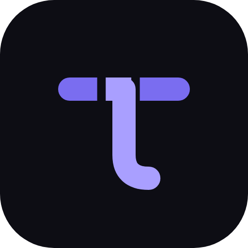
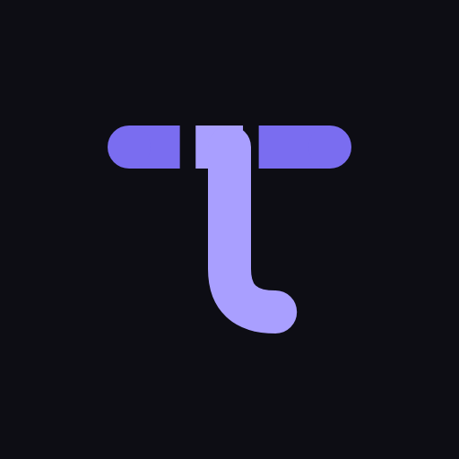

时间尺 · app 图标验收（分段-τ / H1）
全部取自刚生成的真实 PNG。红色虚线圆 = Android 自适应图标安全区（直径 80%）。
「any」图标 — 圆角方板（icon-192 / icon-512）· 真实像素与常见缩显

512 → 128
192 → 96
→ 64
→ 48
→ 32
→ 20
maskable — 满幅 + 安全区检查

512 满幅 + 安全区
圆形遮罩模拟 128
圆形遮罩 64
apple-touch (iOS 圆角) 120
放在暗色应用底上（Android 抽屉 / iOS 主屏近似）
any 72
maskable→圆 72
apple 72